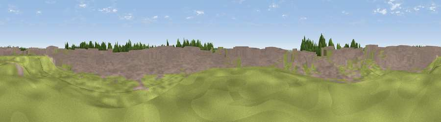

Viewpoint near Broughton
#38497 in England · top 75% of its area beats it · near BroughtonWhere it is
The exact computed spot (SE 94200 07920). Click the marker for map links.
The view, rendered

A 360° render of this exact spot computed from the terrain model, tree cover and land cover — summer colours, afternoon light, calibrated against photographs of famous viewpoints. Real trees, hedges and buildings will differ in detail.
The panorama
Grey silhouette: terrain skyline in each direction (720 bearings, Earth curvature and refraction included). Dashed green: skyline with trees (+15 m) and buildings (+8 m) as obstacles. Blue strip: how far the ground is visible on each bearing.
Where the view opens
Wedge length = distance to the farthest visible ground on that bearing (vegetation-aware). Rings at 10, 25 and 50 km.
What fills the view
45% built-up · 22% grassland · 19% cropland · 13% woodland
Angular shares of the visible panorama (visual magnitude), not map area. Landscape diversity 0.56 (0–1 Shannon).
Key numbers
More beautiful places nearby
The staircase of upgrades: each row has a higher view potential than everything closer. Driving times are estimates from straight-line distance, calibrated against real road routing — check an actual route before setting out.
| Place | Direction | Drive | Score |
|---|---|---|---|
| Viewpoint near Scawby | S · 4 km | ~8 min | 34.6 |
| Viewpoint near Appleby | N · 4 km | ~9 min | 45.7 |
| Ash Holt | S · 7 km | ~14 min | 47.3 |
| Elsham Hill | ENE · 10 km | ~20 min | 52.6 |
| Saxby Wold | NNE · 11 km | ~21 min | 53.9 |
| Viewpoint near Burton upon Stather | NW · 12 km | ~23 min | 57.2 |
| Viewpoint near South Ferriby | NNE · 14 km | ~25 min | 58.1 |
| Viewpoint near Burton Stather | NNW · 14 km | ~25 min | 62.4 |
53.55946, -0.57936 · source: osm peak · position refined by local search. Computed location — check access rights before visiting.